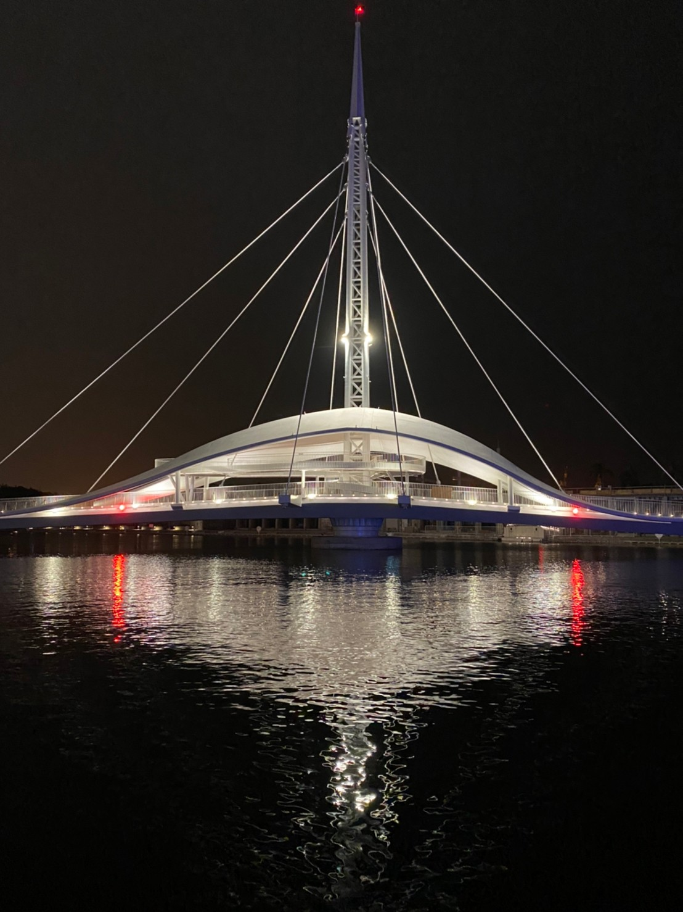

寧靜的巷弄 在小巧卻又五臟俱全的工作坊中 忙碌卻不失祥和 ; 生產著 桿製著
那份真誠
19th December 2021

每日下午3點及加開週五週六的晚上7點
在大港橋開合秀開始前，會有音樂廣播聲響起，提醒民眾盡快將橋淨空，
而在轉動的同時，也會搭配音樂伴奏，使整體更加氣派雄偉。轉動時長大約五分鐘就能完成，
讓人難以想像此龐大的建築能如此順暢的移動著...不知不覺就深陷其中~
在大港橋開合秀開始前，會有音樂廣播聲響起，提醒民眾盡快將橋淨空，
而在轉動的同時，也會搭配音樂伴奏，使整體更加氣派雄偉。轉動時長大約五分鐘就能完成，
讓人難以想像此龐大的建築能如此順暢的移動著...不知不覺就深陷其中~
設計理念
大大縮短了駁二藝術特區及蓬萊棧庫群的距離，
以往要30分的路程，現在只要短短三分鐘即可往返兩地。
大港橋也成為亞洲新灣重要的水岸地圖，其流線與色彩構造的設計，則是參考貝殼及海豚的設計，
不僅兼顧第三船渠既有的船舶及遊艇通行，還與美學做了適當的結合，
而平時也可供550個人與腳踏車通行，完美體現了實用性的價值所在 !
以往要30分的路程，現在只要短短三分鐘即可往返兩地。
大港橋也成為亞洲新灣重要的水岸地圖，其流線與色彩構造的設計，則是參考貝殼及海豚的設計，
不僅兼顧第三船渠既有的船舶及遊艇通行，還與美學做了適當的結合，
而平時也可供550個人與腳踏車通行，完美體現了實用性的價值所在 !
實地走訪
夕陽西下，在河畔休閒漫步的人們正在享受這慵懶的午後，
而走在大港橋上的你，往下俯瞰，則是一片汪洋的大海，
吹著海風、看著夕陽，心，瞬間平靜了許多。
一到了傍晚，那燈光點點的大港橋旁，也時常充斥著飯後散步聊天的情侶、大人及小孩，
那種舒服愜意的時刻，在美景的加持下，何不是一個浪漫又平凡的夜晚呢？
而走在大港橋上的你，往下俯瞰，則是一片汪洋的大海，
吹著海風、看著夕陽，心，瞬間平靜了許多。
一到了傍晚，那燈光點點的大港橋旁，也時常充斥著飯後散步聊天的情侶、大人及小孩，
那種舒服愜意的時刻，在美景的加持下，何不是一個浪漫又平凡的夜晚呢？
地點 : 高雄市鹽埕區駁二大義站
交通方式 :
1.輕軌 : 駁二大義站C12，步行1分鐘
2.捷運 : 鹽埕埔站，步行9分鐘
3.車 : 停至大港橋停車場，步行6分鐘，需收費
交通方式 :
1.輕軌 : 駁二大義站C12，步行1分鐘
2.捷運 : 鹽埕埔站，步行9分鐘
3.車 : 停至大港橋停車場，步行6分鐘，需收費